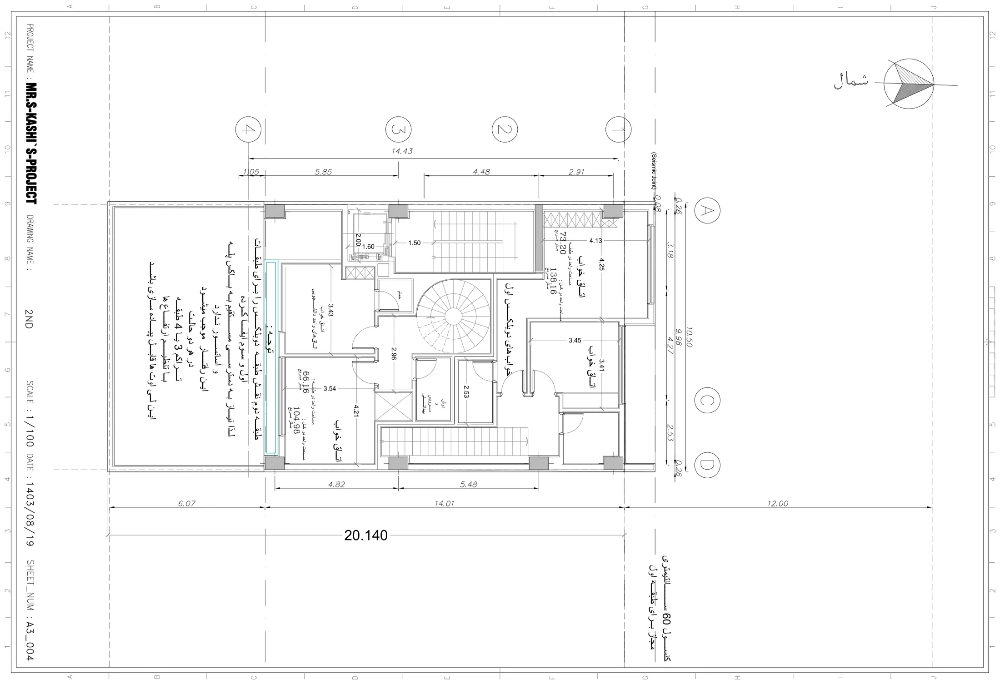

نقشه · طرح ۱۴۰۳
پلان طبقهٔ دوم
طبقهٔ دوم
{kind=link}

به چه نگاه کنیم
- پلهٔ مارپیچ در میانهٔ پلان: پلهٔ واحد دانشجویی که طبقهٔ دوم را به سوم میدوزد.
- «خوابهای دوبلکس اول» در نیمهٔ شمالی: دو اتاق خواب ۴٫۲۵×۴٫۱۳ و ۳٫۴۱×۳٫۴۵، «مساحت در طبقه: ۷۳٫۲۰» و «در کل: ۱۳۸٫۱۶».
- «اتاقهای واحد دانشجویی» در نیمهٔ جنوبی: اتاق ۳٫۴۳ و اتاق ۴٫۲۱×۳٫۵۴، «مساحت در طبقه: ۶۶٫۱۶» و «در کل: ۱۰۴٫۹۸ متر مربع».
- دو حمام، یک «دوش و سرویس بهداشتی» و راهروی ۲٫۹۶ دور پلهٔ مارپیچ.
- پلهٔ داخلی دوبلکس در ضلع شرقی که از طبقهٔ اول بالا آمده.
- یادداشت «توجه» در حاشیهٔ حیاط: این طبقه به پله و آسانسور مشترک نیاز ندارد.
- خط آبی لبهٔ جنوبی: باز هم بازشوی تمامقد رو به حیاط.
فضاها
دوبلکس اول: اتاق خواب (۲)، دوبلکس اول: حمام، دوبلکس اول: دوش و سرویس بهداشتی، واحد دانشجویی: اتاق خواب (۲)، واحد دانشجویی: حمام، پلهٔ مارپیچ، پلهٔ داخلی دوبلکس، پلکان و آسانسور
یادداشت
این برگه جایی است که «طبقات تودرتو» به تمامی پیاده شده: نیمهٔ شمالی خوابهای دوبلکس پایین است و نیمهٔ جنوبی طبقهٔ پایین واحد دانشجویی که با پلهٔ مارپیچ به بالا میرود؛ هیچ واحدی از این طبقه به هستهٔ مشترک در نمیآید. یادداشت معمار در حاشیه همین را میگوید: چون طبقهٔ دوم نقش طبقهٔ دوبلکس را برای اول و سوم بازی میکند، به دسترسی مستقیم به پله و آسانسور نیاز ندارد و همین چیدمان با تنظیم ارتفاعها در تراکم ۳ یا ۴ طبقه قابل اجراست. حلنشده: صاحب زمین پلهٔ مارپیچ را نمیخواست (پلهٔ مربع در گوشه) و اتاقهای ۹ متری را کوچک میدانستم؛ مبلمان نیست. کادر عنوان: 2ND / ۱۴۰۳/۰۸/۱۹ / A3_004.